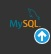

Для корректной работы приложения «Архивный фонд» необходимо обеспечить выполнение следующих требований.
1. Аппаратные требования
— Процессор: 1 ГГц или выше (x86, x64).
— Оперативная память: не менее 512 МБ (рекомендуется 1 ГБ и более).
— Свободное место на диске: не менее 100 МБ для установки приложения + место для базы данных (зависит от объёма архивных данных).
— Разрешение экрана: 1024×768 или выше (рекомендуется 1366×768 и более).
— Принтер (опционально) — для печати отчётов.
2. Программные требования
— Операционная система: Windows 7 / 8 / 10 / 11 (x86 или x64).
— Microsoft .NET Framework: версия не ниже 6.0 (или совместимая среда выполнения .NET).
3. Требования к серверу базы данных
Программа использует СУБД MySQL версии 8.0 и выше.

Необходимые параметры подключения:
— Сервер (может быть localhost, 127.0.0.1 или IP-адрес удалённого сервера).
— Порт (по умолчанию 3306).
— Имя базы данных (по умолчанию — ArchiveFund).
— Логин и пароль пользователя MySQL с правами на чтение/запись.
4. Настройка подключения
Параметры подключения хранятся в файле config.ini, который должен находиться в папке с программой.

Рис. 2. Пример файла конфигурации config.ini
Пример содержимого config.ini:
5. Дополнительные замечания
— Программа протестирована в среде Windows с использованием MySQL Server 8.0.
— Для работы функции печати требуется установленный Microsoft Word (или совместимый процессор, поддерживающий формат .docx).
— При первом запуске, если база данных не найдена или не соответствует структуре, программа автоматически создаст новую базу из скрипта ArchiveFund.06.clear.sql.